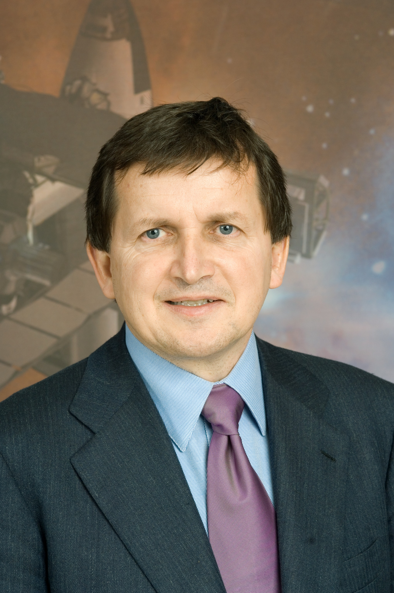

Simonyi Károly
Sir Tim Berners- Lee


Életrajz
Életrajz
Tanulmányai
Tanulmányai
Érdekesség
Űrhajós páyafutása
a mai napig ő a második magyar űrhajós, aki egyben az ötödik és hetedik űrturista is. A világtörténelemben Simonyi az egyetlen, aki kétszer is járt űrturistaként az űrben. A következő, harmadik magyar űrhajós utazására a Nemzetközi Űrállomásra a tervek szerint 2025-ig kerül sor.
Érdekesség
Munkássága
- megkereste Bill Gates-t, aki munkát kínált neki a Microsoftnál
- Simonyi vezetésével fejlesztették ki a Microsoft később legjövedelmezőbb termékeit,
- a Wordöt és az Excelt, valamint az Excel elődjét, a Multiplant.
- elentős elméleti és gyakorlati eredményeket ért el az alkalmazások hordozhatóságát megkönnyítő ún. „virtuális gép” technológia területén is
- Simonyi vezette be a Microsoftnál az objektumorientált programozást
Munkássága
- A diploma megszerzése után Berners-Lee mérnökként dolgozott a Plessey telekommunikációs cégnél Poole- ban , Dorsetben.
- Berners-Lee független vállalkozóként dolgozott a CERN-ben
- mTimBL néven is ismert angol informatikus , akit leginkább a World Wide Web , a HTML jelölőnyelv feltalálójaként ismernek .
- Alapítója és igazgatója a World Wide Web Consortiumnak (W3C),
Kitüntetései